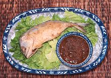

|
Fried Short MackerelThailand - Pla thu | ||||
| Serves: Effort: Sched: DoAhead: |
2 main *** 40 min Prep |
A popular fried fish dish in Thailand, made from a commercially prepared Short Mackerel fish (see Note-1). It is usually served with Nam Prik Kapi, but you can use other dips if you prefer. Conversely, you can use this dip with any other fried fish. | |||
|
2 1/4 ar ar |
c |
Short Mackerel (1) Rice Flour Nam Prik Kapi Sauce (2) Oil to fry Fish |
Prep - (25 minutes)
|